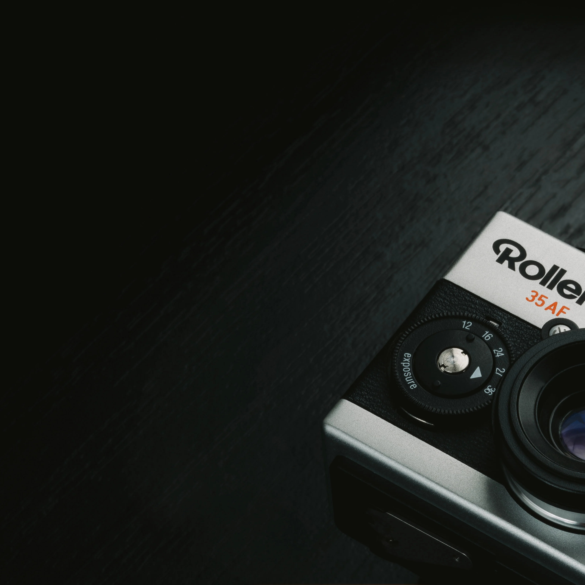

Rollei 35AF, 올해 여름 출시 예정
롤라이(Rollei) 브랜드의 새로운 필름 카메라 'Rollei 35AF'가 올해 발표될 예정이며 가능한 빠른 시일 내에 선보일 것이라고 합니다. 이 카메라는 즉석 카메라로 유명한 부티크 메이커 Mint 카메라( mint-camera.com )가 설계 개발한 것으로서 2022년 즉석 카메라의 설계 노하우를 35mm 필름 카메라에 응용하는 프로젝트로 시작했다고 전했습니다.